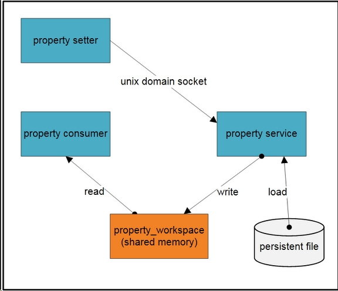
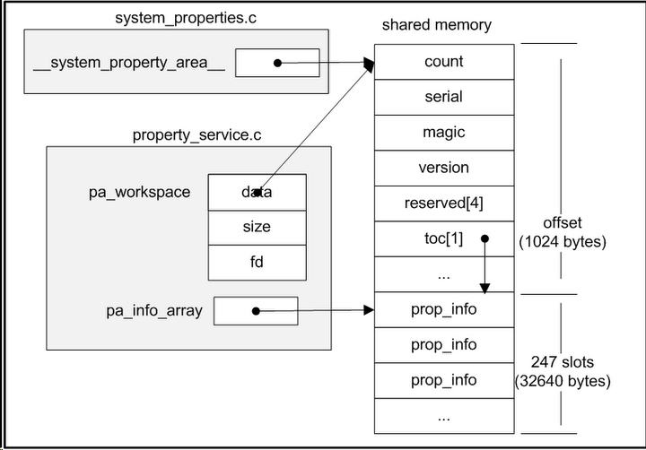

#prop_area的数据结构
###查找一个属性
#property_init
property_init的职责就是初始化客户端进程的属性存储区域，代码分析：
- property_set
设置一个属性值，即往初始化好的属性区域写数据。代码分析：
|
|
#prop_area的数据结构
###查找一个属性
#property_init
property_init的职责就是初始化客户端进程的属性存储区域，代码分析：
|
|
#atomic是什么
#atomic的一个例子
#atomic代码解读
```
#define _Atomic(T) struct { T volatile __val; }
typedef _Atomic(bool) atomic_bool;
typedef _Atomic(char) atomic_char;
typedef _Atomic(signed char) atomic_schar;
typedef _Atomic(unsigned char) atomic_uchar;
typedef _Atomic(short) atomic_short;
typedef _Atomic(unsigned short) atomic_ushort;
typedef _Atomic(int) atomic_int;
typedef _Atomic(unsigned int) atomic_uint;
typedef _Atomic(long) atomic_long;
typedef _Atomic(unsigned long) atomic_ulong;
typedef _Atomic(long long) atomic_llong;
typedef _Atomic(unsigned long long) atomic_ullong;
#if STDC_VERSION >= 201112L || __cplusplus >= 201103L
typedef _Atomic(char16_t) atomic_char16_t;
typedef _Atomic(char32_t) atomic_char32_t;
#endif
typedef _Atomic(wchar_t) atomic_wchar_t;
typedef _Atomic(int_least8_t) atomic_int_least8_t;
typedef _Atomic(uint_least8_t) atomic_uint_least8_t;
typedef _Atomic(int_least16_t) atomic_int_least16_t;
typedef _Atomic(uint_least16_t) atomic_uint_least16_t;
typedef _Atomic(int_least32_t) atomic_int_least32_t;
typedef _Atomic(uint_least32_t) atomic_uint_least32_t;
typedef _Atomic(int_least64_t) atomic_int_least64_t;
typedef _Atomic(uint_least64_t) atomic_uint_least64_t;
typedef _Atomic(int_fast8_t) atomic_int_fast8_t;
typedef _Atomic(uint_fast8_t) atomic_uint_fast8_t;
typedef _Atomic(int_fast16_t) atomic_int_fast16_t;
typedef _Atomic(uint_fast16_t) atomic_uint_fast16_t;
typedef _Atomic(int_fast32_t) atomic_int_fast32_t;
typedef _Atomic(uint_fast32_t) atomic_uint_fast32_t;
typedef _Atomic(int_fast64_t) atomic_int_fast64_t;
typedef _Atomic(uint_fast64_t) atomic_uint_fast64_t;
typedef _Atomic(intptr_t) atomic_intptr_t;
typedef _Atomic(uintptr_t) atomic_uintptr_t;
typedef _Atomic(size_t) atomic_size_t;
typedef _Atomic(ptrdiff_t) atomic_ptrdiff_t;
typedef _Atomic(intmax_t) atomic_intmax_t;
typedef _Atomic(uintmax_t) atomic_uintmax_t;
#Git flow 开发流程
model分成兩個主要分支，三種支援性分支
主要分支
master: 永遠處在 production-ready 狀態
develop: 最新的下次發佈開發狀態
支援性分支
Feature branches: 開發新功能都從 develop 分支出來，完成後 merge 回 develop
Release branches: 準備要 release 的版本，只修 bugs。從 develop 分支出來，完成後 merge 回 master 和 develop
Hotfix branches: 等不及 release 版本就必須馬上修 master 趕上線的情況。會從 master 分支出來，完成後 merge 回 master 和 develop
create branching model
git flow init
Initialized empty Git repository in /Users/fannheyward/flowTest/.git/
No branches exist yet. Base branches must be created now.
Branch name for production releases: [master]
Branch name for "next release" development: [develop]
How to name your supporting branch prefixes?
Feature branches? [feature/]
Release branches? [release/]
Hotfix branches? [hotfix/]
Support branches? [support/]
Version tag prefix? []
新功能开发, 代号 f1
1.git flow feature start f1
Switched to a new branch 'feature/f1'
Summary of actions:
- A new branch 'feature/f1' was created, based on 'develop'
- You are now on branch 'feature/f1'
Now, start committing on your feature. When done, use:
git flow feature finish f1
git-flow 从 develop 分支创建了一个新的分支 feature/f1，并自动切换到这个分支下面。然后就可以进行 f1 功能开发，中间可以多次的 commit 操作。
2.git flow feature finish f1
Switched to branch 'develop'
Already up-to-date.
Deleted branch feature/f1 (was 7bb5749).
Summary of actions:
- The feature branch 'feature/f1' was merged into 'develop'
- Feature branch 'feature/f1' has been removed
- You are now on branch 'develop'
feature/f1 分支的代码会被合并到 develop 里面，然后删除该分支，切换回 develop. 到此，新功能开发这个场景完毕。在 f1 功能开发中，如果 f1 未完成，同时功能 f2 要开始进行，也是可以的。
发布上线，代号 0.1
1.git flow release start 0.1
Switched to a new branch 'release/0.1'
Summary of actions:
- A new branch 'release/0.1' was created, based on 'develop'
- You are now on branch 'release/0.1'
Follow-up actions:
- Bump the version number now!
- Start committing last-minute fixes in preparing your release
- When done, run:
git flow release finish '0.1'
git-flow 从 develop 分支创建一个新的分支 release/0.1，并切换到该分支下，接下来要做的就是修改版本号等发布操作。
2.git flow release finish 0.1
Switched to branch 'master'
Merge made by the 'recursive' strategy.
f1 | 1 +
version | 1 +
2 files changed, 2 insertions(+)
create mode 100644 f1
create mode 100644 version
Switched to branch 'develop'
Merge made by the 'recursive' strategy.
version | 1 +
1 file changed, 1 insertion(+)
create mode 100644 version
Deleted branch release/0.1 (was d77df80).
Summary of actions:
- Latest objects have been fetched from 'origin'
- Release branch has been merged into 'master'
- The release was tagged '0.1'
- Release branch has been back-merged into 'develop'
- Release branch 'release/0.1' has been deleted
git-flow 会依次切换到 master develop 下合并 release/0.1 里的修改，然后用 git tag 的给当次发布打上 tag 0.1，可以通过 git tag 查看所有 tag：
紧急 bug 修正，代号 bug1
1.git flow hotfix start bug1
Switched to a new branch 'hotfix/bug1'
Summary of actions:
- A new branch 'hotfix/bug1' was created, based on 'master'
- You are now on branch 'hotfix/bug1'
Follow-up actions:
- Bump the version number now!
- Start committing your hot fixes
- When done, run:
git flow hotfix finish 'bug1'
git-flow 从 master 分支创建一个新的分支 hotfix/bug1，并切换到该分支下。接下来要做的就是修复 bug.
2.git flow hotfix finish ‘bug1’
Switched to branch 'master'
Merge made by the 'recursive' strategy.
f1 | 2 +-
1 file changed, 1 insertion(+), 1 deletion(-)
Switched to branch 'develop'
Merge made by the 'recursive' strategy.
f1 | 2 +-
1 file changed, 1 insertion(+), 1 deletion(-)
Deleted branch hotfix/bug1 (was aa3ca2e).
Summary of actions:
- Latest objects have been fetched from 'origin'
- Hotfix branch has been merged into 'master'
- The hotfix was tagged 'bug1'
- Hotfix branch has been back-merged into 'develop'
- Hotfix branch 'hotfix/bug1' has been deleted
git-flow 会依次切换到 master develop 分支下合并 hotfix/bug1，然后删掉 hotfix/bug1。到此，hotfix 完成。
remote branch
1.push 一個 feature branch 到遠端
git flow feature publish some_awesome_feature
或 git push origin feature/some_awesome_feature
2.追蹤一個遠端的 branch
git flow feature track some_awesome_feature
或 git checkout -b feature/some_awesome_feature -t origin/feature/some_awesome_feature
3.刪除遠端的 branch
git push origin :feature/some_awesome_feature
#概述
属性（property）系统对Android来说是一个重要的功能。他作为一个系统服务管理着系统的配置和状态，所有的这些系统配置和状态都是属性 （property）。属性（property）是一对键/值（key/value）组合，键和值都是字符串类型。
总体感觉属性系统非常像Windows的注册表的功能。Android中非常多的应用程序和库直接或者间接的依赖于属性系统，并由此决定其运行期的行为。例如：adbd进程通过属性来决定是否当 前运行在模拟器中。再比如：java.io.File.pathSeparator方法返回存储在属性服务中的值。
#属性系统怎样工作
属性系统宏观的结构图如下所示：

从图中我们可以看出Android属性系统由有三个进程，一组属性文件和一块共享内存组成。这块共享内存保存着系统中所有的属性记录，只有 Property service能写这块共享内存，并且Property service负责将属性文件中的属性记录加载到共享内存中。
属性读取进程（property consumer）把这块共享内存映射到自己的进程空间，然后直接读取它。属性设置进程（property setter）也加载这块共享到他的进程空间，但是他不能直接写这块共享内存。当他需要增加或者修改属性的时候，通过Unix Socket发生属性给Property service，Property service将代表设置进程写入共享内存和属性文件。
Property service运行于init进程中。init进程首先创建一块共享内存，并把他的句柄fd存放在这块内存中，init进程通过mmap带 MAP_SHARE标志的系统调用，把这块内存映射到他的虚拟空间中，最终这块内存所有的更新将会被所有映射这块共享内存的进程看到。共享内存句柄fd和 共享内存大小存储在系统环境变量“ANDROID_PROPERTY_WORKSPACE”中，所有的进程包括属性设置进程和属性读取进程都将通过这个系 统环境变量获得共享内存的句柄fd和大小，然后把这块内存映射到他们自己的虚拟空间。共享内存布局如下：


然后，init进程将会从以下文件中加载属性：
>
1 /default.prop
2 /system/build.prop
3 /system/default.prop
4 /data/local.prop
下一步是启动Property service。这步中，将会创建一个Unix Socket服务器，这个Socket有一个闻名的名称“/dev/socket/property_service”。最后init进入死循环，等待socket的连接请求。
在读取进程中，当它初始化libc库的时候，将会获得属性系统共享内存的句柄和大小（bionic/libc/bionic /libc_init_common.c libc_init_common函数）。并把这块共享内存映射到自己的进程虚拟空间中(bionic/libc/bionic /system_properties.c system_properties_init函数)。这样读取进程将会向访问普通内存一样访问属性系统的共享内存了。
当前，属性不能被删除。也就是说一旦属性被创建，将不可以被删除，但是它们可以被修改。
#怎样获得和设置属性
在Android中有三种方式来设置和获取属性：
native code
当编写Native的程序时，可以使用property_get和property_set API来获得和设置属性。使用这两个API必须要包含头文件cutils/properties.h和链接libcutil库。
java code
Android在Java库中提供System.getProperty和System.setProperty方法，我们Java程序可以通过他们来设置和获得属性。
但是请注意！虽然从语法上面看Java的代码和Native代码非常相近，但是Java版本存储把属性存在其他地方，而不是我们上面提到的属性系统中。在 JVM中有一个hash表来维护Java的属性。所以Java属性和Android属性是不同的，不能用Java API（System.getProperty和System.setProperty）来设置系统属性。也不能通过Native的方法 （property_get和property_set）设置Java的属性。
更新：Andrew指出android.os.SystemProperties可以操作Android系统属性（虽然这个类倾向于内部使用）。这个类通过JNI调用Native的property_get和property_set方法来获得和设置属性。
shell script Shell脚本
getprop [keyname] Keyname为需要获取的键值名，如果没有参数则打印全部的键值信息。
setprop [keyname] [value] Keyname为需要获取的键值名，value为设置的值，这个值为字符串。
watchprops 监听系统属性的变化，如果期间系统的属性发生变化则把变化的值显示出来。
#Android 系统的配置信息
#概述
Android系统是运作在linux kernal上的，因此它的启动过程也遵循linux的启动过程，当linux内核启动之后，运行的第一个进程是init，这个进程是一个守护进程，它的生命周期贯穿整个linux 内核运行的始终， linux中所有其他的进程的共同始祖均为init进程。
作为天字第一号进程，init进程被赋予了很多及其重要的职责：
建立各种用户空间的目录，并挂载相关的文件系统
#解读代码
init的代码位于/system/core/init/init.cpp中，入口函数为main，
##linker初始化
###_start
linke的入口函数, 该函数调用了linker_init，并传入一个参数sp(堆栈指针)
###__linker_init
负责初始化 linker，完成 linker 的重定位工作。
###__linker_init_post_relocation
初始化property, 连接debugd，预加载一下系统库
##动态库的加载过程
dlopen->dlopen_ext->do_dlopen
find_library->find_libraries
find_library_internal->load_library->load_library
ELF(Executable and Linkable Format)即可执行连接文件格式，是Linux默认的目标文件格式，分析elf文件有助于理解一些重要的系统概念，例如程序的编译和链接，程序的加载和运行等。
##ELF文件类型
a)可重定位文件:用户和其他目标文件一起创建可执行文件或者共享目标文件,例如lib.a文件。
b)可执行文件：用于生成进程映像，载入内存执行,例如编译好的可执行文件a.out。
c)共享目标文件：用于和其他共享目标文件或者可重定位文件一起生成elf目标文件或者和执行文件一起创建进程映像，例如lib.so文件。
##ELF文件的组织
ELF文件参与程序的连接(建立一个程序)和程序的执行(运行一个程序)，编译器和链接器将其视为节头表(section header table)描述的一些节(section)的集合，而加载器则将其视为程序头表(program header table)描述的段(segment)的集合，通常一个段可以包含多个节。可重定位文件都包含一个节头表，可执行文件都包含一个程序头表。共享文件两者都包含有。为此，ELF文件格式同时提供了两种看待文件内容的方式，反映了不同行为的不同要求。
###文件头(Elf header)
Elf头在程序的开始部位，作为引路表描述整个ELF的文件结构，其信息大致分为四部分：一是系统相关信息，二是目标文件类型，三是加载相关信息，四是链接相关信息。
其中系统相关信息包括elf文件魔数(标识elf文件)，平台位数，数据编码方式，elf头部版本，硬件平台e_machine，目标文件版本 e_version，处理器特定标志e_ftags：这些信息的引入极大增强了elf文件的可移植性，使交叉编译成为可能。目标文件类型用e_type的值表示，可重定位文件为1，可执行文件为2，共享文件为3;加载相关信息有：程序进入点e_entry．程序头表偏移量e_phoff，elf头部长度 e_ehsize，程序头表中一个条目的长度e_phentsize，程序头表条目数目e_phnum;链接相关信息有：节头表偏移量e_shoff，节头表中一个条目的长度e_shentsize，节头表条目个数e_shnum ，节头表字符索引e shstmdx。可使用命令”readelf -h filename”来察看文件头的内容。
###程序头表(program header table)
程序头表告诉系统如何建立一个进程映像．它是从加载执行的角度来看待elf文件．从它的角度看．elf文件被分成许多段，elf文件中的代码、链接信息和注释都以段的形式存放。每个段都在程序头表中有一个表项描述，包含以下属性：段的类型，段的驻留位置相对于文件开始处的偏移，段在内存中的首字节地址，段的物理地址，段在文件映像中的字节数．段在内存映像中的字节数，段在内存和文件中的对齐标记。可用”readelf -l filename”察看程序头表中的内容。程序头表的结构如下：
###节头表(section header table)
节头表描述程序节，为编译器和链接器服务。它把elf文件分成了许多节．每个节保存着用于不同目的的数据．这些数据可能被前面的程序头重复使用，完成一次任务所需的信息往往被分散到不同的节里。由于节中数据的用途不同，节被分成不同的类型，每种类型的节都有自己组织数据的方式。每一个节在节头表中都有一个表项描述该节的属性，节的属性包括小节名在字符表中的索引，类型，属性，运行时的虚拟地址，文件偏移，以字节为单位的大小，小节的对齐等信息，可使用”readelf -S filename”来察看节头表的内容。节头表的结构如下：
####特殊节
.bss
构成程序的内存映像的未初始化数据。根据定义，系统在程序开始运行时会将数据初始化为零。如节类型 SHT_NOBITS 所指明的那样，此节不会占用任何文件空间。
.comment
注释信息，通常由编译系统的组件提供。此节可以由 mcs(1) 进行处理。
.data、.data1
构成程序的内存映像的已初始化数据。
.dynamic
动态链接信息。有关详细信息，请参见动态节。
.dynstr
进行动态链接所需的字符串，通常是表示与符号表各项关联的名称的字符串。
.dynsym
动态链接符号表。有关详细信息，请参见符号表节。
.eh_frame_hdr、.eh_frame
用于展开栈的调用帧信息。
.fini
可执行指令，用于构成包含此节的可执行文件或共享目标文件的单个终止函数。有关详细信息，请参见初始化和终止例程。
.fini_array
函数指针数组，用于构成包含此节的可执行文件或共享目标文件的单个终止数组。有关详细信息，请参见初始化和终止例程。
.got
全局偏移表。有关详细信息，请参见全局偏移表（特定于处理器）。
.hash
符号散列表。有关详细信息，请参见散列表节。
.init
可执行指令，用于构成包含此节的可执行文件或共享目标文件的单个初始化函数。有关详细信息，请参见初始化和终止例程。
.init_array
函数指针数组，用于构成包含此节的可执行文件或共享目标文件的单个初始化数组。有关详细信息，请参见初始化和终止例程。
.interp
程序的解释程序的路径名。有关详细信息，请参见程序的解释程序。
.lbss
特定于 x64 的未初始化的数据。此数据与 .bss 类似，但用于大小超过 2 GB 的节。
.ldata、.ldata1
特定于 x64 的已初始化数据。此数据与 .data 类似，但用于大小超过 2 GB 的节。
.lrodata、.lrodata1
特定于 x64 的只读数据。此数据与 .rodata 类似，但用于大小超过 2 GB 的节。
.note
注释节中说明了该格式的信息。
.plt
过程链接表。有关详细信息，请参见过程链接表（特定于处理器）。
.preinit_array
函数指针数组，用于构成包含此节的可执行文件或共享目标文件的单个预初始化数组。有关详细信息，请参见初始化和终止例程。
.rela
不适用于特定节的重定位。此节的用途之一是用于寄存器重定位。有关详细信息，请参见寄存器符号。
.relname、.relaname
重定位信息，如重定位节中所述。如果文件具有包括重定位的可装入段，则此节的属性将包括 SHF_ALLOC 位。否则，该位会处于禁用状态。通常，name 由应用重定位的节提供。因此，.text 的重定位节的名称通常为 .rel.text 或 .rela.text。
.rodata、.rodata1
通常构成进程映像中的非可写段的只读数据。有关详细信息，请参见程序头。
.shstrtab
节名称。
.strtab
字符串，通常是表示与符号表各项关联的名称的字符串。如果文件具有包括符号字符串表的可装入段，则此节的属性将包括 SHF_ALLOC 位。否则，该位会处于禁用状态。
.symtab
符号表，如符号表节中所述。如果文件具有包括符号表的可装入段，则此节的属性将包括 SHF_ALLOC 位。否则，该位会处于禁用状态。
.symtab_shndx
此节包含特殊符号表的节索引数组，如 .symtab 所述。如果关联的符号表节包括 SHF_ALLOC 位，则此节的属性也将包括该位。否则，该位会处于禁用状态。
.tbss
此节包含构成程序的内存映像的未初始化线程局部数据。根据定义，为每个新执行流实例化数据时，系统都会将数据初始化为零。如节类型 SHT_NOBITS 所指明的那样，此节不会占用任何文件空间。有关详细信息，请参见第 8 章。
.tdata、.tdata1
这些节包含已初始化的线程局部数据，这些数据构成程序的内存映像。对于每个新执行流，系统会对其内容的副本进行实例化。有关详细信息，请参见第 8 章。
.text
程序的文本或可执行指令。
.SUNW_bss
共享目标文件的部分初始化数据，这些数据构成程序的内存映像。数据会在运行时进行初始化。如节类型 SHT_NOBITS 所指明的那样，此节不会占用任何文件空间。
.SUNW_cap
功能要求。有关详细信息，请参见功能节。
.SUNW_capchain
功能链表。有关详细信息，请参见功能节。
.SUNW_capinfo
功能符号信息。有关详细信息，请参见功能节。
.SUNW_heap
从 dldump(3C) 中创建的动态可执行文件的堆。
.SUNW_dynsymsort
.SUNW_ldynsym – .dynsym 组合符号表中符号的索引数组。该索引进行排序，以按照地址递增的顺序引用符号。不表示变量或函数的符号不包括在内。对于冗余全局符号和弱符号，仅保留弱符号。有关详细信息，请参见符号排序节。
.SUNW_dyntlssort
.SUNW_ldynsym – .dynsym 组合符号表中线程局部存储符号的索引数组。该索引进行排序，以按照偏移递增的顺序引用符号。不表示 TLS 变量的符号不包括在内。对于冗余全局符号和弱符号，仅保留弱符号。有关详细信息，请参见符号排序节。
.SUNW_ldynsym
扩充 .dynsym 节。此节包含局部函数符号，以在完整的 .symtab 节不可用时在上下文中使用。链接编辑器始终将 .SUNW_ldynsym 节的数据放置在紧邻 .dynsym 节之前。这两个节始终使用相同的 .dynstr 字符串表节。这种放置和组织方式使两个符号表可以被视为一个更大的符号表。请参见符号表节。
.SUNW_move
部分初始化数据的附加信息。有关详细信息，请参见移动节。
.SUNW_reloc
重定位信息，如重定位节中所述。此节是多个重定位节的串联，用于为引用各个重定位记录提供更好的临近性。由于仅有重定位记录的偏移有意义，因此节的 sh_info 值为零。
.SUNW_syminfo
其他符号表信息。有关详细信息，请参见Syminfo 表节。
.SUNW_version
版本控制信息。有关详细信息，请参见版本控制节。
具有点 (.) 前缀的节名为系统而保留，但如果这些节的现有含义符合要求，则应用程序也可以使用这些节。应用程序可以使用不带前缀的名称，以避免与系统节产生冲突。使用目标文件格式，可以定义非保留的节。一个目标文件可以包含多个同名的节。
保留用于处理器体系结构的节名称通过在节名称前加上体系结构名称的缩写而构成。该名称应来自用于 e_machine 的体系结构名称。例如，.Foo.psect 是根据 FOO 体系结构定义的 psect 节。
现有扩展使用其历史名称。